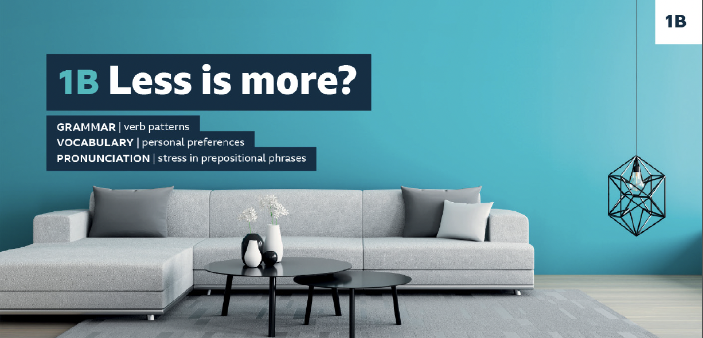
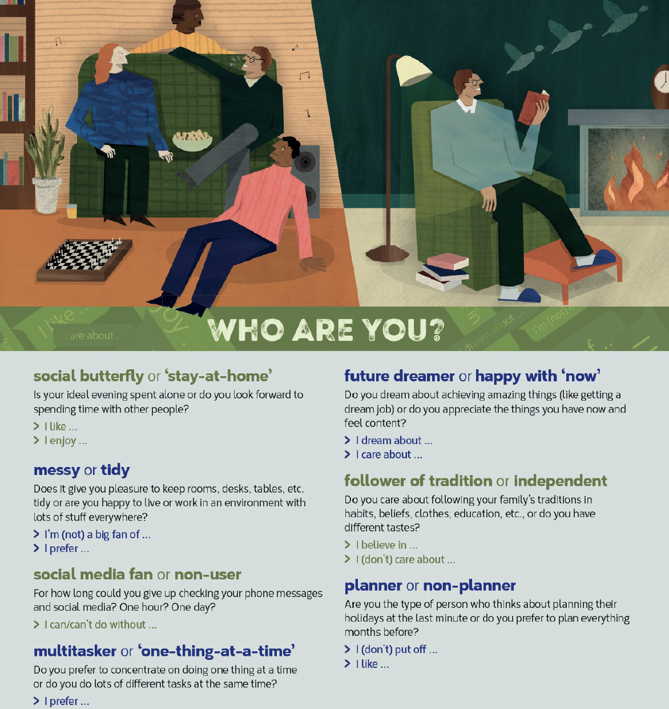

1. Warm-up — Grammar Review
Complete the stories with the correct form of the verbs in brackets.
One morning I for my car keys and I couldn't find them anywhere. Eventually, I them in my son's bedroom. He them because he didn't want me to go to work.
When I at high school, my friends a lot of their time skateboarding. I it before and I it looked fun. I myself a really cool skateboard and I was so excited to use it. Unfortunately, the first time I went out, I and broke my arm. I how difficult it was! My skateboard stayed in my room after that.
4 was studying · 5 spent · 6 hadn't tried · 7 thought · 8 bought · 9 fell · 10 hadn't realised
2. Writing — An Advert to Sell an Item Online
8A
8B. Complete the descriptions of items for sale in the photos with the words in the box.

1980s vintage denim jacket. In perfect .

Brand new men's bike. Bought earlier this year but never . front and back lights, bike lock and keys.

Cool moka coffee pot. Serves 4.
#espresso #coffee

Spanish classical guitar. In condition, back slightly damaged. Comes complete with spare set of strings.

Ladies' walking boots, size 40. boots. New and in perfect condition. In original box.
9A. Look at the sentences from the adverts. Which types of word are missing: nouns, articles, pronouns or other grammatical words?
- The price of the bike includes front and back lights, a bike lock and keys. → Price includes front and back lights, bike lock and keys.
- They are new and they are in perfect condition. → New and in perfect condition.
9B. How are the sentences (1–5) reduced in the adverts?
- This bike was bought earlier this year but it was never used.
- It is in the same condition as it was when it was new.
- The coffee pot serves four people.
- The back of the guitar is slightly damaged.
- They come in the original box.
2 As new.
3 Serves 4.
4 Back slightly damaged.
5 In original box.
9C. Reduce the sentences (1–4) to note form.
- It has been slightly damaged.
- The price includes a spare set of strings.
- This has never been used.
- It is in very good condition.
2 Price includes spare (set of) strings.
3 As new.
4 In very good condition.
9D.
3. Reading — Minimalism vs. Maximalism
1A. Look at the photo and discuss the questions.

1B. Read the introduction to a magazine article about maximalism and minimalism. Are you surprised by any of the facts in the first paragraph? Why/Why not?
Minimalism vs.
Maximalism
According to the Los Angeles Times, the average American home contains 300,000 items. It's a crazy number, even if it includes everything from pencils to beds. A British newspaper, The Daily Telegraph, reported that the average British 10-year-old owns 238 toys but plays with only twelve daily. The Story of Stuff, a documentary, tells us we consume double the number of things that we did half a century ago and there are more phones in the world than people.
All of this might explain why minimalism – the idea of living more simply – has become a trend. Minimalism began as an artistic movement in the 1950s. Artists like Donald Judd and Agnes Martin produced paintings and sculptures reduced to bare, pure lines. Now it's not art but the environmental impact of our lifestyles that has seen minimalism return.
Maximalism also has its roots in the art world, especially the French Rococo style of the eighteenth century and a 1920s movement called Art Deco. It involves bright colours and interesting patterns like zebra stripes and leaf prints. Fans of maximalism say it's not only for eighteenth century French kings, but for anyone who enjoys having lots of beautiful objects in the house.
So, space and simplicity or colour and craziness? Here, two designers share their views on the issue: minimalism or maximalism.
1C. Student A: Read what Zuleya says about minimalism. Student B: Read what Richard says about maximalism. Tell each other an interesting fact from your part of the article.
1D. Read the rest of the article. Who do you think makes the stronger argument: Zuleya or Richard?
2A. Can you remember what the full-length article says about these things? Check your answers.
- a crazy number
- twelve toys
- the world's number of phones
- a simpler world
- who Joshua Fields Millburn and Ryan Nicodemus are
- appreciating the things that really matter
- objects that give visitors pleasure
2 The average British 10-year-old owns 238 toys but plays with only twelve daily.
3 There are more phones in the world than people.
4 Zuleya believes a simpler world is a better world.
5 The presenters of the Netflix series The Minimalists: Less is Now.
6 Zuleya's argument: minimalism frees you to appreciate the things that matter — people and relationships.
7 Richard's house is filled with treasures that give him and his visitors pleasure.
2B. Are the ideas in Ex 2A facts or opinions? Think about where the information comes from. Read the examples to help you.
1 The idea that it's 'crazy' is the writer's opinion, not a fact. There is no source except the writer's thoughts.
2 The number twelve is from research quoted in the newspaper The Daily Telegraph. It is a fact, not an opinion.
2C.
4. Grammar — Verb Patterns
3A. Choose the correct words to complete the sentences.
- Minimalism refers to design / designing things in a simple, elegant way.
- They succeeded in persuade / persuading people to stop collecting useless stuff.
- It turned out to be / being the most important trip of my life.
- I went on to become / becoming a designer.
- I believe in create / creating joyful designs.
- I look forward to visit / visiting more street markets.
3B. Check your answers in the article.
3C. Look again at the sentences in Ex 3A and answer the questions.
- What usually follows verb + preposition: the -ing form or the infinitive?
- Which two sentences in Ex 3A do not follow this pattern?
2 Sentences 3 and 4 (turned out to be, went on to become) use to + infinitive, not -ing.
4A. Match the words in bold in sentences 1–2 with the definitions a–b.
1 They persuaded people to stop collecting useless stuff.
2 If we stop to think about what's really important …
a Stop + to infinitive means pause an action so that you can do a different action.
b Stop + -ing means change a habit.
Grammar Bank 1B — Verb Patterns
Sometimes we put two verbs together.
They hope to learn Spanish. | I like playing ball games.
When the first verb takes a preposition (except to), the second verb is usually in the -ing form.
You should think about doing that course. | I finally succeeded in finding a job. | We believe in telling the truth. | You should concentrate on passing your exams.
I dream about playing for that team. | She apologised for getting angry. | He struggles with working at night. | I care about saving the environment.
When a phrasal verb is followed by a verb, the second is usually in the -ing form.
We carried on driving for another hour. | I look forward to reading your new book! | She gave up studying at night. | We put off making that decision.
Some phrasal verbs can be followed by an infinitive or an -ing form, but with a change in meaning.
She went on dancing even after her accident. (go on + -ing = 'continue')
She went on to be a great dancer. (go on + infinitive = 'end up')
He grew up watching his father play football. (grow up + -ing = 'do something while changing from child to adult')
He grew up to be a great footballer. (grow up + infinitive = 'describes what a person becomes as an adult')
Some verbs (without prepositions) can be followed by a to infinitive or an -ing form, but with a change in meaning.
I stopped to talk to Felipe. (stop + to infinitive = 'paused an action to do a different action')
I stopped listening to rock music years ago. (stop + -ing = 'change a habit or finish a repeated/extended action')
I must remember to set the alarm. (remember + to infinitive = 'you have a responsibility which you must not forget')
I remember playing with those toys when I was five or six. (remember + -ing = 'you have a memory of something that happened in the past')
Practice 1. Complete the sentences with the correct form of the verb in brackets.
- She's never cared about lots of possessions.
- After university, Ahmed went on a TV presenter.
- I gave up treasure years ago.
- That house we rented turned out ideal for my family.
- Yoko apologised for late.
- I'm looking forward to my dream job.
Practice 2. Match each pair of sentence beginnings with the endings (a–b).
1 Kim went on to play
2 Kim went on playing
a his guitar even after a string broke.
b the guitar at several famous venues in London and Paris.
3 Pete remembers calling
4 Pete remembers to call
a his grandmother every day to check she's OK.
b me, but he's forgotten what we talked about.
5 She stopped drinking
6 She stopped to drink
a soda because it's unhealthy.
b water halfway through the run.
Practice 3. Choose the correct options (A–C) to complete the text.
Three signs you have too much stuff
1 You buy things not realising you already have them
Problem: You'd always dreamed about 1 that book or dress or vase. You order it online, open the package and realise you already own it.
Solution: Stop 2 attention to advertisements and new trends. Concentrate on 3 the things you already have.
2 There's nowhere to sit down or eat
Problem: You have chairs, a table and a sofa, but they are full of stuff. 'I can't carry on 4 like this,' you say. But you do.
Solution: Before you go to bed, remember 5 everything in its place, so every surface has some space on it.
3 You can never find what you're looking for
Problem: This happens with clothes. You have piles of them, but can't find what you want. Eventually you give up 6 and just buy something new.
Solution: Go through your clothes. Throw away anything you haven't worn for over 18 months. It might turn out 7 the most important thing you do in the house.
1 A owning B own C to own
2 A paying B to pay C pay
3 A to appreciate B appreciate C appreciating
4 A live B living C to live
5 A to put B put C putting
6 A to look B looking C look
7 A being B be C to be
5. Vocabulary — Personal Preferences
5A. Look at the words in bold in the two sections of the article about Minimalism vs. Maximalism. Answer the questions.
- Which two adjectives mean 'perfect for me'?
- Which two phrases mean 'I don't like …'?
- Which phrase means 'don't need'?
- Which word means 'enjoy or be thankful for something'?
- Which phrase means 'make someone happy'?
- Which word means 'the kind of things you like'?
2 I'm not a big fan of · It's not for me
3 do without
4 appreciate
5 give pleasure
6 tastes
5B. Choose the correct words to complete the summaries.
Zuleya says that, for creative people, the homes she designs are 1pleasure / ideal. She thinks minimalism allows us to 2stand / appreciate the important things in life. She believes we can 3do without / give pleasure so many things.
Richard is doing his 4dream / first job. Minimalism isn't 5for him / the taste because he 6dreams of / is not a big fan of blank, empty spaces. He says his objects give 7taste / pleasure to his visitors. He also says people have different 8hopes / tastes and you can live a simple life and still enjoy colours and patterns in your home.
5C. Complete the sentences with your own ideas.
6. Speaking
7A. Read the questionnaire and think about your answers. What explanations and examples can you think of?

7B.
Communication
To show a strong attitude towards a topic, we often use emphatic language, e.g. 'I definitely …', 'I definitely don't …'. Can you think of any other emphatic phrases?
Before you do the activity in Ex 7C, look at the questions and think about which emphatic phrases you can use in your answers to show your attitude.
Strong positive:
- I definitely … / I definitely do …
- I absolutely love …
- I'm a huge fan of …
- I'm really into …
- I really appreciate …
- … is ideal for me / … is my dream …
Strong negative:
- I definitely don't … / I definitely wouldn't …
- I'm not a big fan of …
- … is not for me at all
- I can't stand …
- I really don't see the point of …
- I could easily do without …